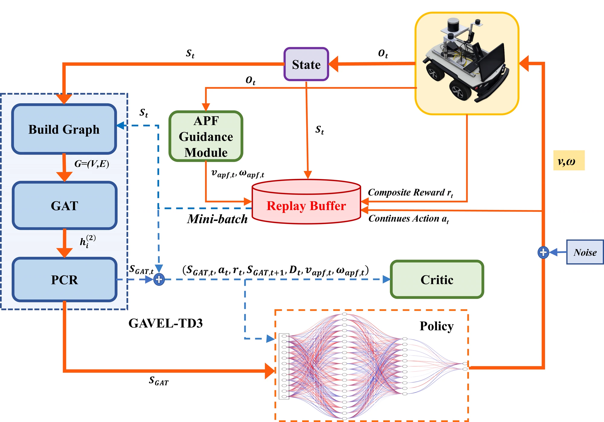
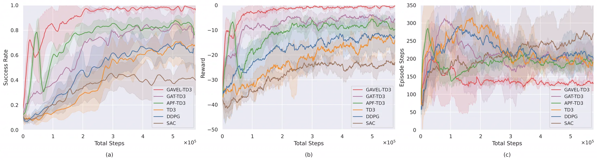
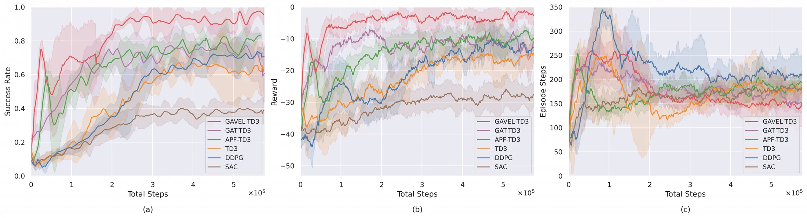
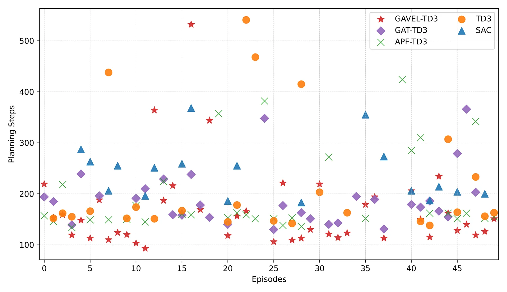
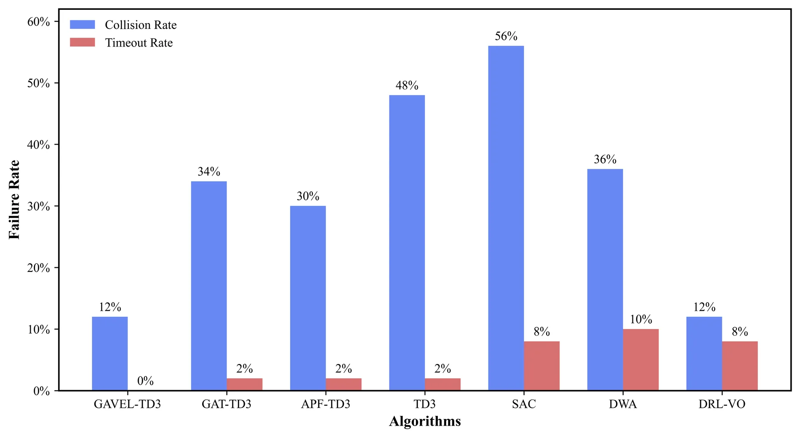
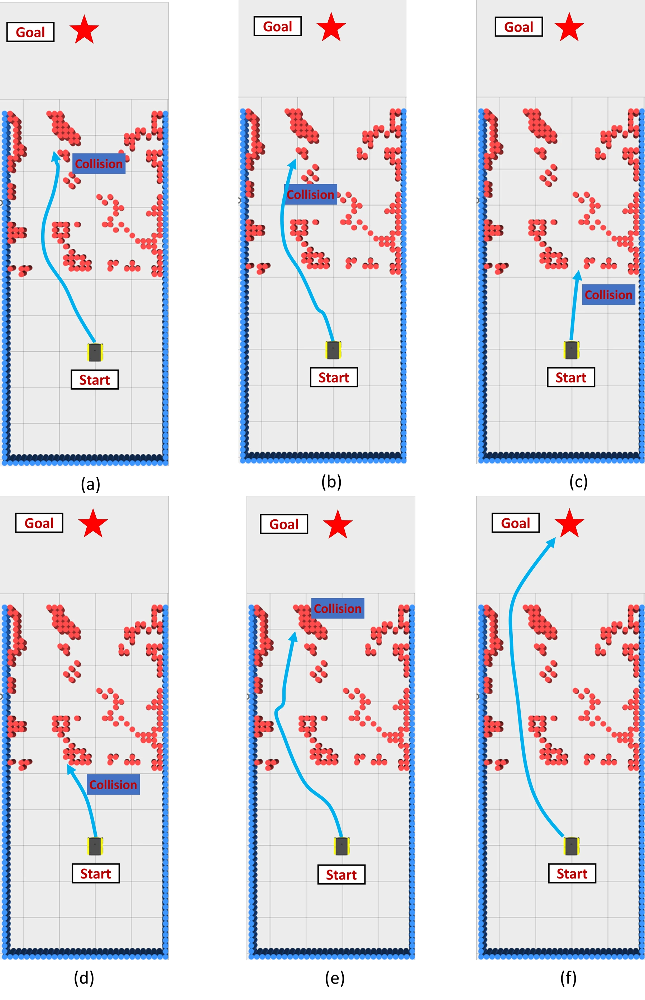
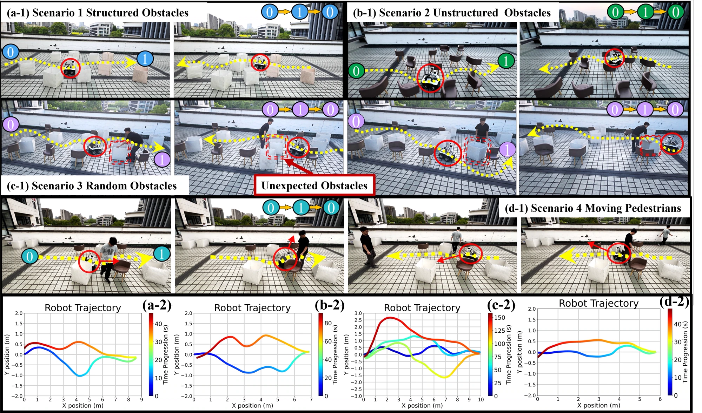

Supplementary Video
From simulation to physical navigation
The learned policy is deployed on a mobile robot using only onboard observations and goal-relative state.
Engineering Applications of Artificial Intelligence · Project Page
A graph-aware reinforcement learning framework that combines relational LiDAR representation with artificial-potential-field-guided value learning for safe and efficient mapless navigation.
1Zhejiang Gongshang University · 2Key Laboratory of Electronic Business and Logistics Information Technology of Zhejiang Province · 3Luoteng Technology · 4Zhejiang University
Video
Deployment results across structured, unstructured, random-obstacle, and moving-pedestrian scenarios.
Supplementary Video
The learned policy is deployed on a mobile robot using only onboard observations and goal-relative state.

Abstract
GAVEL-TD3 addresses two practical limitations of end-to-end mapless navigation: incomplete local observations and inefficient early exploration.
Deep reinforcement learning can enable mobile robots to navigate without prior maps, but local LiDAR measurements are partial and noisy, and unconstrained exploration may converge slowly. GAVEL-TD3 represents sectorized LiDAR scans as a graph and uses graph attention networks to capture spatial relationships between obstacles.
An artificial potential field generates reference actions for an auxiliary critic during early training. This guidance accelerates policy learning without constraining the final actor at deployment, and the complete framework is integrated into Twin Delayed Deep Deterministic Policy Gradient.
Model local LiDAR sectors as graph nodes and learn obstacle relationships with graph attention, using only onboard observations.
Inject safe motion priors through an auxiliary critic during early training while preserving the learned actor’s autonomy.
Evaluate in simulation, unseen BARN environments, and four real-world scenarios without environment-specific retuning.
Training & Zero-shot Evaluation
GAVEL-TD3 converges quickly in simulation and transfers directly to unseen BARN layouts, maintaining robust navigation in dense obstacle fields.


BARN Benchmark
Quantitative evaluation across 50 unseen BARN episodes reveals fewer planning steps and the lowest overall failure rate.



Real-world Deployment
The policy is deployed on a mobile robot with onboard 3D LiDAR. The outdoor experiments use no prior map and no environment-specific parameter tuning.

Quantitative Results
Mean / standard deviation over successful trials
Swipe horizontally to view time and path-length statistics →
| Scenario | Algorithm | Success rate | Avg. time (s) / Std | Avg. length (m) / Std |
|---|---|---|---|---|
| Structured obstacles | GAVEL-TD3 | 5 / 5 | 42.16 / 0.56 | 18.40 / 0.41 |
| TD3 | 3 / 5 | 52.73 / 1.44 | 18.49 / 0.20 | |
| Unstructured obstacles | GAVEL-TD3 | 4 / 5 | 82.80 / 3.38 | 16.41 / 0.20 |
| TD3 | 2 / 5 | 99.65 / 6.44 | 16.52 / 0.03 | |
| Random obstacles | GAVEL-TD3 | 4 / 5 | 153.60 / 4.83 | 48.27 / 0.72 |
| TD3 | 1 / 5 | 179.27 / 0.00 | 48.46 / 0.00 | |
| Moving pedestrians | GAVEL-TD3 | 3 / 5 | 44.00 / 5.11 | 13.46 / 0.33 |
| TD3 | 1 / 5 | 53.10 / 0 | 13.59 / 0 |
Each algorithm was evaluated in five trials per scenario. Success rate is reported as successful trials out of five; time and path length are calculated only over successful trials, with the value after the slash denoting the standard deviation.
Citation
The published article is available from Engineering Applications of Artificial Intelligence.
@article{Liu2026GAVELTD3,
title = {GAVEL-TD3: Robust mapless navigation of mobile robots via fusion of graph attention networks and artificial potential field},
author = {Liu, Ziheng and Zhang, Zhixiong and Fu, Jun and Wang, You},
journal = {Engineering Applications of Artificial Intelligence},
volume = {182},
pages = {116076},
year = {2026},
month = oct,
doi = {10.1016/j.engappai.2026.116076},
url = {https://doi.org/10.1016/j.engappai.2026.116076}
}